Short film by Tatiana Doroshenko
Tatiana’s short films and screen works have seen audiences in Australia, Europe and America. Screening highlights include European Media Arts Festival (EMAF) 2007, VAD Spain 2006, Transmediale Berlin 2002, Aspen, Palm Springs (2007), the Santiago Biennale 2003, HollyShorts, MIFF and St Kilda Film Festival.

 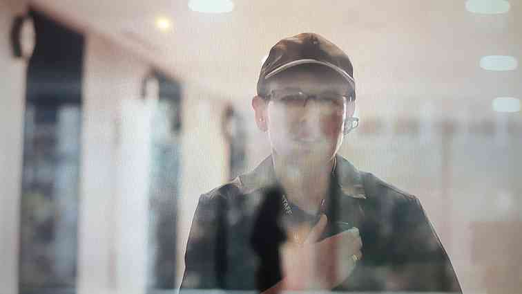
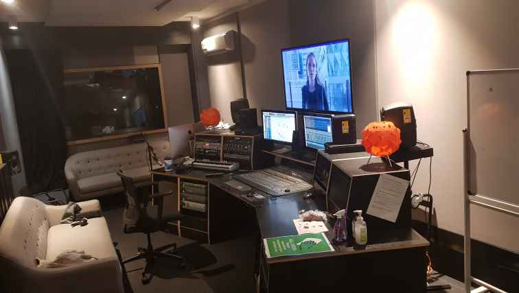
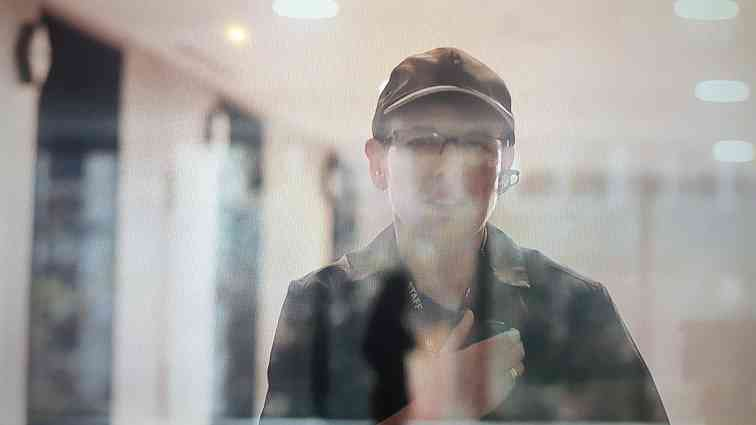
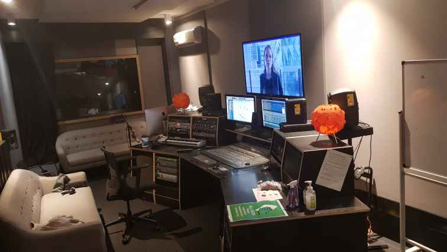
Work on the film included Mixing in 5.1 @ RMIT Studios using Protools, foley recording, and creating sound design elements throughout. Initially drafting a very rough mix for Tatiana ~ OCT, work on the film ramped up over christmas, after Tatiana's directors breif mid DEC. We even managed to run out of voices on the Protools system! Choosing to get creative instead of bouncing tracks/buses down. Finding any stereo tracks heading to a mono source, making sure not to use native and DSP plugins on the same tracks.
Foley recording included footsteps, clothes, air conditioning, bags, doors, and thrown chairs!
Thanks to John Philips and project wingman Pauly C!
Glenn Bennie of undergroundLOVERS, latest project collaborating with Ricky Maymi of BJM.
Running a studio session recording guitar overdubs. Tracks imported/created from/in Logic by Glenn.
Glenn Bennie BandCamp - FaceBook - Ricky Maymi Twitter
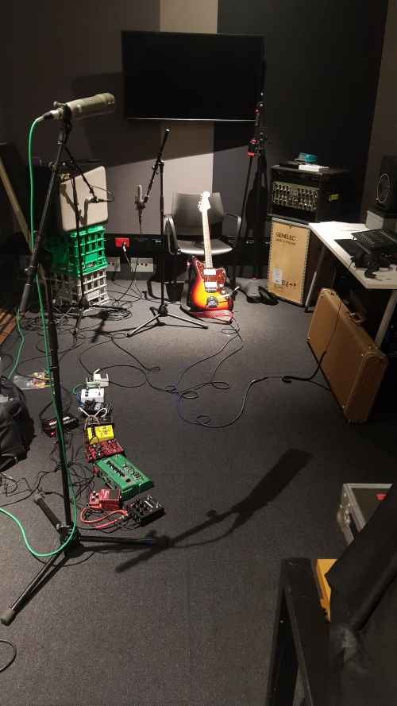
Ricky used an Ebow on most tunes to create waves of texture to pair with Glenn's tunes. I kept being reminded of the Pastels Re-mix album 'Illuminati', but noisier. Micing included 2x close mics (Royer 122 and SM58) used for alternate tones, and 1x mic on the far side of the studio facing the glass capturing the only reflections available in the very dead tracking space. Songs headed to Simon Polinski for Mix/Master! Simons Discogs here.
Working sound now @ TheJazzLab
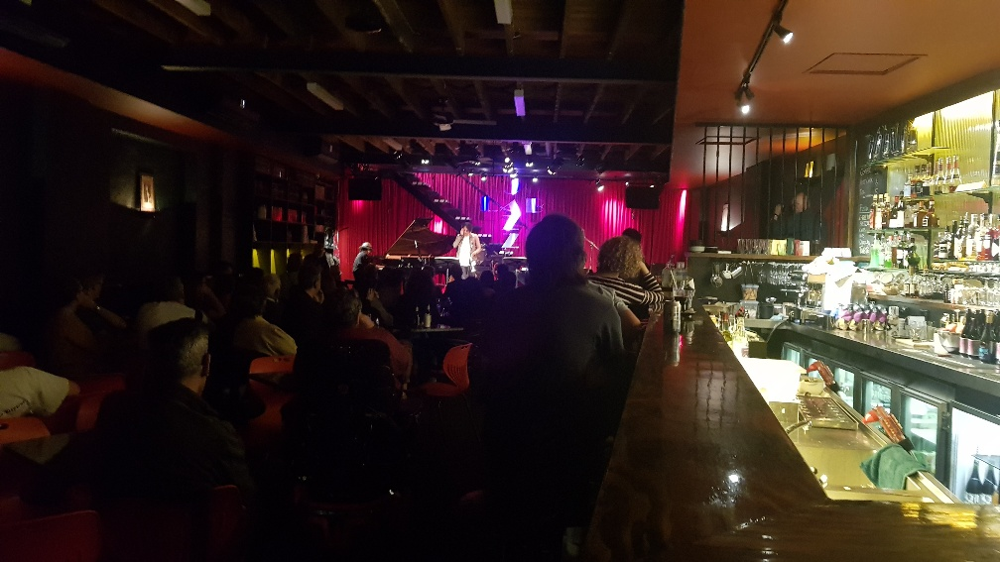 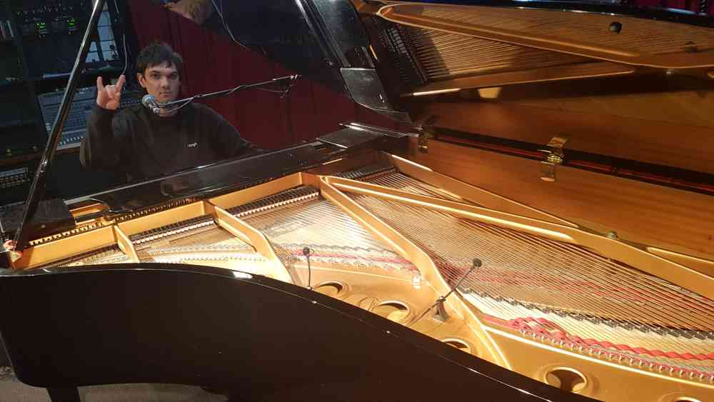Thanks to Michael Tortoni, Jeremy, Tok, and Kristjan for the gig!
The Cambodian Space Project (CSP) is recognised as one of the few truly Aussie Asian hybrids in contemporary music. Since 2009, it has been at the forefront of an astonishing cultural revival in Cambodia, since singer Channthy Kak & musician Julien Poulson teamed up in Phnom Penh, to sing back to life the lost divas & rock legends of Cambodia’s golden age of music, all but wiped out by the genocidal Khmer Rouge regime. The Cambodian Space Project sound is definitely for the 21st century, mashing tradition with rock’n’roll, rare groove, soul, & trippy visual spectacle. They perform re-imagined Khmer classics, alongside originals speaking of Cambodia today like Not Easy Rock’n’roll, Have Visa No Have Rice, and Whisky Cambodia.
Running 2x record sessions in RMIT's A studio and tagging along for a trip to Headgap with Julian Poulsen and the gang.
CambodianSpaceProject - HeadGap
 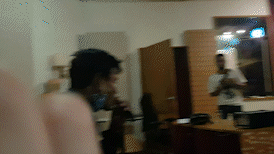
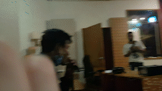
Neve Genesys console and a some classic outboard gear into Protools, tracking everyone together live, isolating the bass and guitar to take tracks to HeadGap later that week for the Horns!
Look out for their ipcoming release A fave track was a dub groove about a giant snail making its way across a bar. The second record session had Julian ripping overdubs for nearly 8 hours straight. CSP's crazy schedule meant someone was napping whenever possible, usually in the control room with monitors up too.
Sorry I missed the last weekend Julian and thanks John! Was a great time. សូមអរគុណ!. Alter ego Pauly C on the scene.
Content rceation weekend at Collingwood Yard's Music Market
Tasked with live recording 8x acts over the weekend for Craig/ZenArcade.
Desk: Yamaha QL1. Capturing audio straight from the networked RIO3224-D2 stage box into Reaper. A bit of pre-production had to be done to get Dante Virtual Soundcard and Dante Controller playing along with the desk and then Reaper.
Artists: Charles Jenkins, Little Wise, Nick Batterham, Hamish Cowan, Chris Dubrow, Bec Sykes, Joyce Prescher, Sianna Lee.
Runnning a record session in RMIT's A studio with the band, getting tracks down for their upcoming album. With the usual suspects Kristjan and Paul. Recording everything through the Neve Genesys 1073 pre amps with little to no eq/comp, a very clean signal. And it sounded great. Request by Henry to record at 44.1kHz for a legacy version of Protools! Can't wait to hear it.
Band: Henry Hugo (Electric Guitar), Helen Cattanach (Bass), Lisa Wood (Electric guitar), and Marni Newman (Drums)
Henry Hugo and the Faleen Angels Instagram & BandCamp.
X-Aspirations was recorded in a single afternoon in 1979 at Trafalgar Studios in the band's hometown of Sydney and released the following year on the band's own label. In 2022, X were celebrating the 40th (ish?) anniversary of the classic album, “X-Aspirations”, playing the whole album in it's running order.
Another live multitrack recording for Craig Kember / Zen Arcade. X played their album "Aspirations" in full for a coinciding 40th anniversary night.
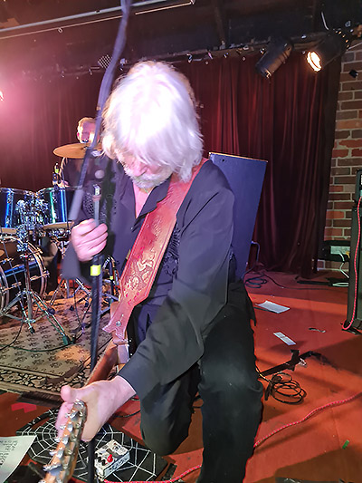 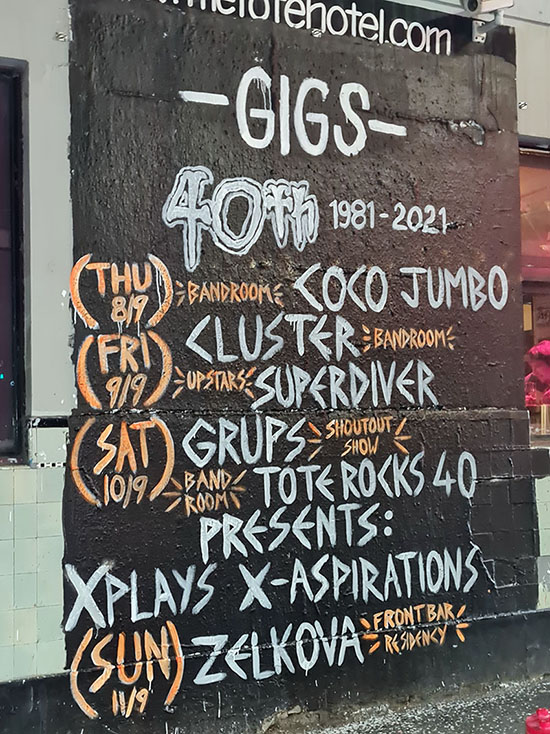Write-up by Ronald Brown can be found here: i94 Bar: FORTY YEARS AFTER "X-ASPIRATIONS", THERE'S NOTHING LIKE X AT THE TOTE
<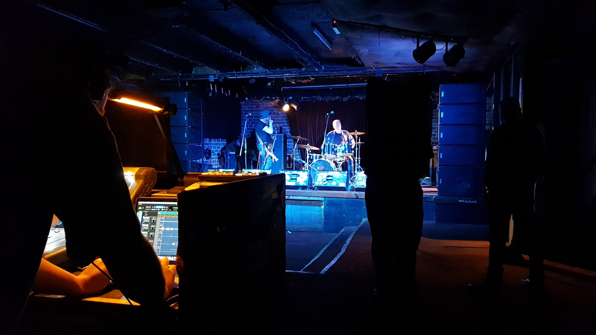The house desk (Digico S21) had been re-patched locally earlier that day and Dazza's mic set-up was almost bare bones - so there weren't any luxuries left for the capture - however, the recordings came out sounding pretty nice, considering the sound coming off stage. See linked article for more.
This was the last live capture using Protools into a macbookpro. While a wasted punter/dickhead critiqued Dazza's work, the unfounded negativity that made no dent on Daz found another way. At the very same moment, stopping record, an error popped up in tools and we lost the BV track. Sorry about that Craig!
Tracks Live / Reaper has been much sturdier running from the macbook since.
Jim Morginie: in THE COLOUR WHEEL, we explore the attempts over history to prove the 'connection' between music and colour - examine the art, music, and theories of Kandinsky, Klee, Schoenberg, and Bowral born artist Roy de Maistre. In the early years of the 20th century there were terrific advances in physics with the Special and General theories of Relativity and the advent of quantum mechanics, uncovering the very building blocks of matter which totally changed the way in which humans observed the world. Around the same time, a similar revolution took place in both Muisc and Art, along with a desire to deconstruct formality and structure. THE COLOUR WHEEL is performed by myself and an ensemble of electric guitar players and painters.
RMIT extra-curricular fun. Midnight Oil's Jim Moginie combines music and art in - 'The Colour Wheel', a guitar orchestra exploring the concept of synesthesia, putting the newly installed Capitol lighting system to good use.
In anticipation of the ColourWheel coming to The Capitol in 2023, a group of eager volunteers helped staff to put on three dry-run shows to assess the productions viability/kinks/potential.
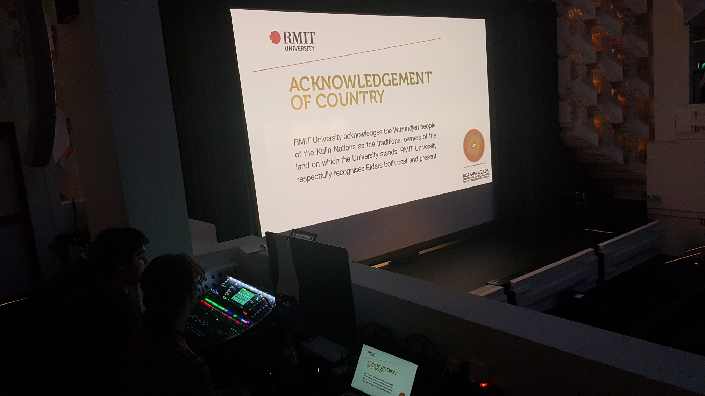

ColourWheel BandCamp - ColourWheel Vimeo
Desk: Allen & Heath SQ6. 2x large subwoofers were brought in and we patched into the Capitol's PA system. Testing the system with pink noise and an RTA showed promising signs. But when really pushed, the loud stage volume caused issues with clarity of the performance. The PA being set up through a Q-sys network was geared to accomodate lectures and speakers, and not so much orchestral rock \m/,. One run through was even performed without the PA, though a little underwhelming. Hopefully 2023 has a PA set-up brought in or the performers each bring a Fender Twin.
Live to air Sundays at 9am, The team continues the great Marinara tradition of bringing you a quirky but informative look at all that is marine.
Triple R volunteer, creating weekly podcasts for streaming on rrr.org.au/explore/podcasts/radio-marinara and other major platforms.

I am the Podfather.
A jazz/pop soul songwriter local to Melbourne Supported by her alt. R&B/pop-rock flavoured band.
Mixing at the Workers. The big square concrete room doesn't sound great, BUT NicoleHalfordandTheRoseLimbs sure did.
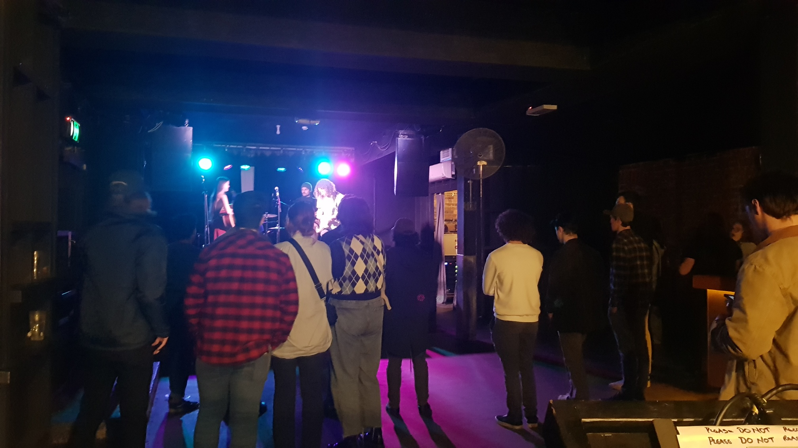In May 2022, the Astor Theatre showcased a new documentary, Love In Bright Landscapes. The film celebrates the late David McComb of the Triffids. The Astor Theatre presented the film in a double feature, with a Q&A and a tribute concert after the showing. Snap Scene: Love In Bright Landscapes: A Tribute To David Mccomb, Astor Theatre, 15th May 2022
Through John Philips and Craig Kamber (Zen Arcade), helping Mark Barry set up stage mics, X32 desk, and PA system. 4 PA's and two subs - along with Roland Howards amp on loan used by JP Shilo that night - was more than enough volume to fill the theatre. Recording out of the X32 desk was an easy USB out, to laptop, capture using Tracks Live.
Later gave an incredibly awkward interview published on RMIT's student news page: Sound Production student shines in new documentary, the title is a little misleading..
Aardvark Music is a Melbourne based not for profit organisation that provides song-writing and music opportunities for young people aged between 14 and 24 who have a passion or talent for music. Music therapists, musicians and youth mentors work with young people to write, record and perform original music together in groups while creating a community to stay connected to.
Live Mixing, Live Multitrack Recording, Studio Record Engineer, Studio Mix Engineer (Music, Film, and Video), Sound Designer
David Andrew Turner
Naarm / Melbourne, Victoria
turner.davidandrew@gmail.com